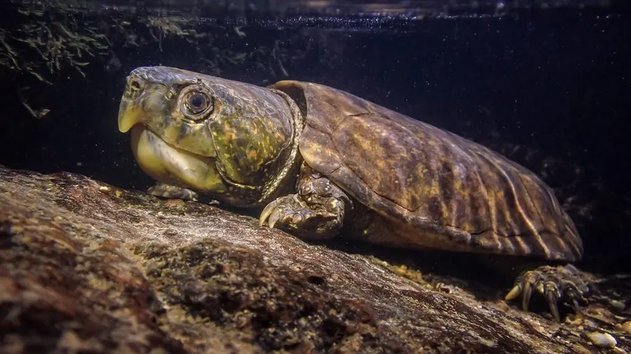

爬行动物 · 动物界
平胸龟 Platysternon megacephalum

中国南方的珍稀龟类，头部巨大、吻端呈鹰嘴状，善于攀爬溪流岩石，被列为国家一级保护动物，属于珍稀龟类。
- 分类
- 门脊索动物门纲爬行纲目龟鳖目科平胸龟科属平胸龟属
- 栖息环境
- 山区清澈的溪流、山涧、岩缝与溪边石堆
- 地理分布
- 中国南方多省区及缅甸、泰国、越南等东南亚国家
- 保护级别
- IUCN 濒危（EN）；中国国家一级保护动物；CITES 附录 II
物种志
平胸龟背甲长 15–20 厘米，头部特别大，呈三角形，吻端尖锐并向下弯曲，形似鹰嘴，“鹰嘴龟”之名由此而来；背甲扁平，呈棕褐或黑褐色，腹甲平而小，四肢强壮，趾间有蹼，爪长而锐利，尾巴较长，几乎与背甲等长。
它分布于中国南方以及缅甸、泰国、越南等地的山区溪流，栖息于水流清澈的溪流、山涧和岩缝，善于攀爬岩石和逆流而上，多在夜间活动，捕食鱼、虾、蟹、螺和蛙类。它是卵生龟类，雌龟在溪边沙土中产卵 2–5 枚。由于被大量捕捉作为宠物和食用，加上溪流污染和栖息地破坏，野生平胸龟数量稀少，被列为濒危物种，中国将其列为国家一级保护动物。
形态与习性
- 食性鱼、虾、蟹、螺和蛙类
- 体长背甲长 15–20 cm
- 寿命约 30–40 年
- 繁殖卵生，2–5 枚
- 活动节律夜行性，善攀爬溪流岩石
趣味知识
- 平胸龟头部巨大、吻端像鹰嘴，因此又叫“鹰嘴龟”。
- 它能在湍急的溪流中逆流爬行，攀爬岩石的能力很强。
- 平胸龟在中国属于国家一级保护动物，禁止非法捕捉。